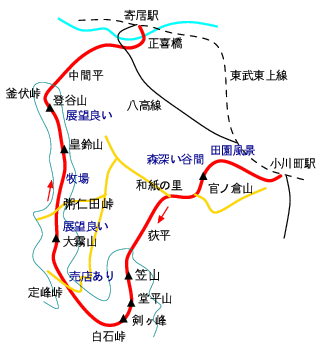

外秩父七峰縦走
天気：☀️
メンバー：T

久しぶりの山。トレーニングを兼ねて低山歩き40kmに挑戦！東武鉄道主催で毎年春に開催されているハイキング大会のコースを、よりによってクリスマスに歩いてきた。
未明、車で小川町へ。初めての場所へ夜間に目指すときはカーナビは特に便利だ。朝6時に到着。まだ真っ暗で底冷えのする寒さ。駅周辺に駐車スペースはないので、少し離れたところに置いて歩き始める。ようやく夜が明ける。天気は良いようだ。
駅周辺は首都圏近郊のベッドタウンらしい街並みだが、すぐに田園風景へ。官ノ倉山へは少し急登があり、頂上からはこれから登る笠山が見える。下って車道を辿り、和紙の里からさらに長い林道を歩く。
林道歩きも荻平からようやく山道になり、笠山を越えて堂平山へ。ここはパラグライダーの離陸場になっていて、大勢が飛んでいた。再び車道を歩き、急な階段を上がると剣ヶ峰。ここから定峰峠、旧定峰峠を経て大霧山へは尾根上の山道になる。しかし、この辺の山は本当に里山だが、稜線直下には牧場がのどかに広がっていて、ちょっとスイスっぽい？と言おうと思えば言える。
大霧山を越え、粥仁田峠からはほとんど車道を歩く。このあたりも牧場で、季節が季節ならば絶好のドライブコース、ハイキングコースで賑わうのだろうが、今日は人影を全くみない。日が傾き、風が冷たくなって来る。
枯葉の舞い散る皇鈴山を通過し、少しの登りで最後のピークの登谷山に立つ。電波塔があるが、展望は良い。そろそろ足が痛くなってくるがゴールまではまだまだ長い車道歩きが残っている。40kmを歩き通して寄居駅に着いた時には、既に日は暮れていた。
付記：2005年に外秩父七峰縦走ハイキング大会に参加して、再びこのコースを歩きました（山行記録）。